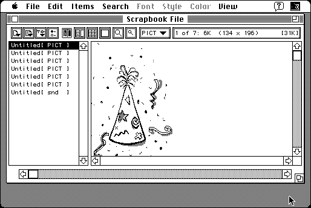

Download
ScrapItPro5.52.zip (811K) ScrapIt Pro 5.52 repackaged into a zipped hfs disk image and checksum file. The disk image can be mounted with Mini vMac.
ScrapItPro5.52.sea.hqx (1.2M) ScrapIt Pro 5.52 in the original format.
copyright: John V. Holder
mod date: Jun 20, 2000
license: shareware
last known url
(gone)
A much fancier replacement for the Scrapbook Desk Accessory. For System “7 on up”.

If you find these downloads useful, please consider helping the Gryphel Project, which hosts them.
Here are the md5 checksums for the downloads, signed with Gryphel Key 5:
--------- GRY SIGNED TEXT --------- 7688a04cc46b266237fd5ccfe8a7f0f4 ScrapItPro5.52.zip 067c0e2ddecb7546c93f7e08af3434f3 ScrapItPro5.52.sea.hqx ------- BEGIN GRY SIGNATURE ------- Gry/4Xa8CFcUzxdN/LsMB2x1h1qVfKWmWd1QwVvWxJdg5rkg/sWN5e/jklECZAcC hFRovwR6VGcshktvEBIZym3dHPWU+dogZNGt4tIE2RjFyOubSbZNK0jy8/8YlYha kJzifLt2U7UeeNg7TCNMja0+BigkWS5QvQIAaFOKjrAfwcxYtzBK9Et+09ory+Ez -------- END GRY SIGNATURE --------